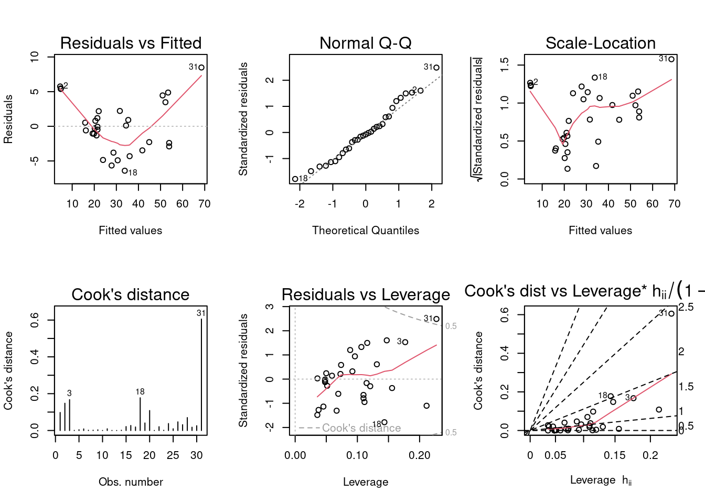
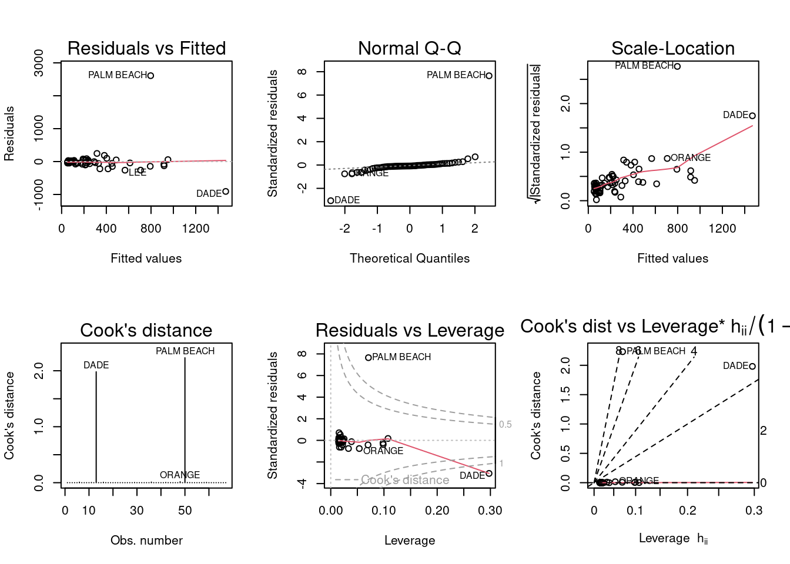
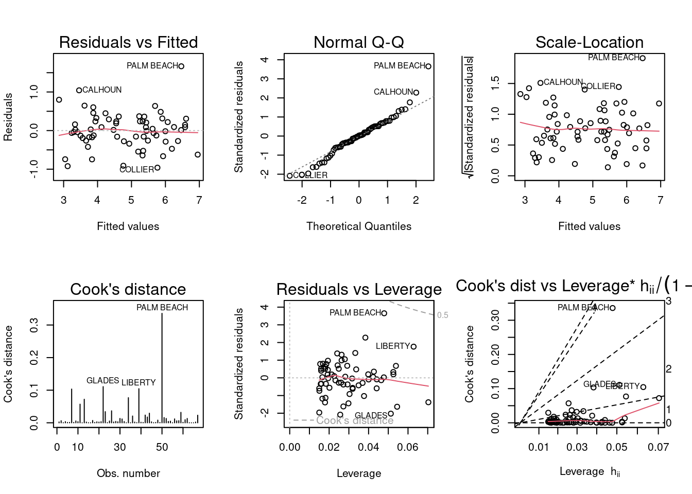

P S Be Ba New
1 48.5 1.10 3 1 0
2 55.0 1.01 3 2 0
3 68.0 1.45 3 2 0
4 137.0 2.40 3 3 0
5 309.4 3.30 4 3 1
6 17.5 0.40 1 1 0
A) For backward elimination, which variable would be deleted first? Why?
The BEDS variable should be eliminated first because it has the highest p-value and is therefore the weakest predictor of price.
B) For forward selection, which variable would be added first? Why?
In forward selection, we add based on the strongest significance. The p-value for SIZE is 0 and the p-value for NEW is 0.000. I am inclined to believe that NEW appears this way because it has a value slightly higher than 0, so I would estimate that SIZE is the most statistically significant and should be added first.
C) Why do you think that BEDS has such a large P-value in the multiple regression model, even though it has a substantial correlation with PRICE?
I think the correlation between BEDS and PRICE is influenced by another variable, perhaps SIZE. On its own, BEDS may just be a weak indicator of PRICE,
D) Using software with these four predictors, find the model that would be selected using each criterion:
For parts a and b above, I compare several models in one chart (I did not run all possible models; just a few that made sense based on previous information). Because a higher R² indicates a stronger fit, the model including all variables (m5) should be selected if using R² and the model including all except BEDS (m6) should be selected if using adjusted R².
c) PRESS
Code
#use PRESS function to test all models from previous questionsPRESS <-function(linear.model) { pr <-residuals(linear.model)/(1-lm.influence(linear.model)$hat) PRESS <-sum(pr^2)return(PRESS)}cat(' ', 'PRESS', '\n','m1: ', PRESS(m1), '\n','m2: ', PRESS(m2), '\n','m3: ', PRESS(m3), '\n','m4: ', PRESS(m4), '\n','m5: ', PRESS(m5), '\n','m6: ', PRESS(m6), '\n')
Similar to AIC, m6 is again the best choice here, but m5 is close.
d) Explain which model you prefer and why.
It seems to me that m6, which includes all variables but BEDS, is the best fit. It meets the criterion for best fit in most tests. Model m5, which includes all variables, would be a close 2nd choice.
Question 2
Tree volume estimation is a big deal, especially in the lumber industry. Use the trees data to build a basic model of tree volume prediction. In particular,
A) fit a multiple regression model with the Volume as the outcome and Girth and Height as the explanatory variables
Code
tree <-lm(Volume ~ Girth + Height, data=trees)tree
B) Run regression diagnostic plots on the model. Based on the plots, do you think any of the regression assumptions are violated?
Code
par(mfrow =c(2,3)); plot(tree, which =1:6)

The Residuals vs Fitted plot violates the assumption of linearity. The line in the Scale-Location plot is not quite horizontal, but it is unclear which assumption this violates- perhaps homoskedasticity.
Question 3
In the 2000 election for U.S. president, the counting of votes in Florida was controversial. In Palm Beach County in south Florida, for example, voters used a so-called butterfly ballot. Some believe that the layout of the ballot caused some voters to cast votes for Buchanan when their intended choice was Gore.
The data has variables for the number of votes for each candidate—Gore, Bush, and Buchanan.
A) Run a simple linear regression model where the Buchanan vote is the outcome and the Bush vote is the explanatory variable. Produce the regression diagnostic plots. Is Palm Beach County an outlier based on the diagnostic plots? Why or why not?
Code
vote <-lm(Buchanan ~ Bush, data=florida)par(mfrow =c(2,3)); plot(vote, which =1:6)

Palm Beach does appear to be an outlier as it falls way outside the lines on most plots. Dade is also an outlier on a few plots.
B) Take the log of both variables (Bush vote and Buchanan Vote) and repeat the analysis in (a). Does your findings change?
Code
vote_log <-lm(log(Buchanan)~log(Bush),data=florida)par(mfrow =c(2,3)); plot(vote_log, which =1:6)

Palm Beach still appears to be a significant outlier, but now there are other counties which also stand out. Dade no longer appears to be an outlier on any plot.
Source Code
---title: "Homework 5"author: "Lindsay Jones"description: The final homeworkdate: "12/4/2022"format: html: toc: true code-fold: true code-copy: true code-tools: truecategories: - hw5---# Homework 5## Setup```{r}library(alr4)library(smss)library(stargazer)```## Question 1```{r}data(house.selling.price.2)head(house.selling.price.2)```### A) For backward elimination, which variable would be deleted first? Why?The BEDS variable should be eliminated first because it has the highest p-value and is therefore the weakest predictor of price.### B) For forward selection, which variable would be added first? Why?In forward selection, we add based on the strongest significance. The p-value for SIZE is 0 and the p-value for NEW is 0.000. I am inclined to believe that NEW appears this way because it has a value slightly higher than 0, so I would estimate that SIZE is the most statistically significant and should be added first.### C) Why do you think that BEDS has such a large P-value in the multiple regression model, even though it has a substantial correlation with PRICE?I think the correlation between BEDS and PRICE is influenced by another variable, perhaps SIZE. On its own, BEDS may just be a weak indicator of PRICE,### D) Using software with these four predictors, find the model that would be selected using each criterion:#### a) R²#### b) Adjusted R²```{r}m1 <-lm(P ~ S, house.selling.price.2)m2 <-lm(P ~ Be, house.selling.price.2)m3 <-lm(P ~ Ba, house.selling.price.2)m4 <-lm(P ~ New, house.selling.price.2)m5 <-lm(P~., house.selling.price.2)m6 <-lm(P~.-Be, house.selling.price.2)stargazer(m1, m2, m3, m4, m5, m6, type ='text')```For parts *a* and *b* above, I compare several models in one chart (I did not run all possible models; just a few that made sense based on previous information). Because a higher R² indicates a stronger fit, the model including all variables (m5) should be selected if using R² and the model including all except BEDS (m6) should be selected if using adjusted R².#### c) PRESS```{r}#use PRESS function to test all models from previous questionsPRESS <-function(linear.model) { pr <-residuals(linear.model)/(1-lm.influence(linear.model)$hat) PRESS <-sum(pr^2)return(PRESS)}cat(' ', 'PRESS', '\n','m1: ', PRESS(m1), '\n','m2: ', PRESS(m2), '\n','m3: ', PRESS(m3), '\n','m4: ', PRESS(m4), '\n','m5: ', PRESS(m5), '\n','m6: ', PRESS(m6), '\n')```If using PRESS as the primary criterion, model m6 is the best choice because it has the lowest PRESS score.#### d) AIC```{r}cat(' ', 'AIC', '\n','m1: ', AIC(m1), '\n','m2: ', AIC(m2), '\n','m3: ', AIC(m3), '\n','m4: ', AIC(m4), '\n','m5: ', AIC(m5), '\n','m6: ', AIC(m6), '\n')```m6 is the best choice here, but m5 is close.#### c) BIC```{r}cat(' ', 'BIC', '\n','m1: ', BIC(m1), '\n','m2: ', BIC(m2), '\n','m3: ', BIC(m3), '\n','m4: ', BIC(m4), '\n','m5: ', BIC(m5), '\n','m6: ', BIC(m6), '\n')```Similar to AIC, m6 is again the best choice here, but m5 is close.#### d) Explain which model you prefer and why.It seems to me that m6, which includes all variables but BEDS, is the best fit. It meets the criterion for best fit in most tests. Model m5, which includes all variables, would be a close 2nd choice.## Question 2Tree volume estimation is a big deal, especially in the lumber industry. Use the trees data to build a basic model of tree volume prediction. In particular,### A) fit a multiple regression model with the Volume as the outcome and Girth and Height as the explanatory variables```{r}tree <-lm(Volume ~ Girth + Height, data=trees)tree```### B) Run regression diagnostic plots on the model. Based on the plots, do you think any of the regression assumptions are violated?```{r}par(mfrow =c(2,3)); plot(tree, which =1:6)```The Residuals vs Fitted plot violates the assumption of linearity. The line in the Scale-Location plot is not quite horizontal, but it is unclear which assumption this violates- perhaps homoskedasticity.## Question 3In the 2000 election for U.S. president, the counting of votes in Florida was controversial. In Palm Beach County in south Florida, for example, voters used a so-called butterfly ballot. Some believe that the layout of the ballot caused some voters to cast votes for Buchanan when their intended choice was Gore.The data has variables for the number of votes for each candidate—Gore, Bush, and Buchanan. ### A) Run a simple linear regression model where the Buchanan vote is the outcome and the Bush vote is the explanatory variable. Produce the regression diagnostic plots. Is Palm Beach County an outlier based on the diagnostic plots? Why or why not?```{r}vote <-lm(Buchanan ~ Bush, data=florida)par(mfrow =c(2,3)); plot(vote, which =1:6)```Palm Beach does appear to be an outlier as it falls way outside the lines on most plots. Dade is also an outlier on a few plots. ### B) Take the log of both variables (Bush vote and Buchanan Vote) and repeat the analysis in (a). Does your findings change?```{r}vote_log <-lm(log(Buchanan)~log(Bush),data=florida)par(mfrow =c(2,3)); plot(vote_log, which =1:6)```Palm Beach still appears to be a significant outlier, but now there are other counties which also stand out. Dade no longer appears to be an outlier on any plot.